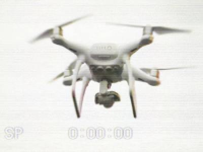

|
|
|
< Вернуться к списку товаров и услуг

Метеорологический дрон
Последний прорыв в воздушной технологии! Метеорологический дрон является полностью автоматизированным
устройством, способным к полёту с множеством сенсоров на борту. Он может
измерять температуру и скорость ветра, атмосферное давление и даже замечать признаки
приближения погодных катаклизмов, такие как повышенный уровень кислотности в облаках!
Снаряжённый большим ЖК-дисплеем и 64 КБ памяти, дрон позволяет вам прочитать собранную информацию
сразу же после его автоматической посадки в вашем саду!
|
|